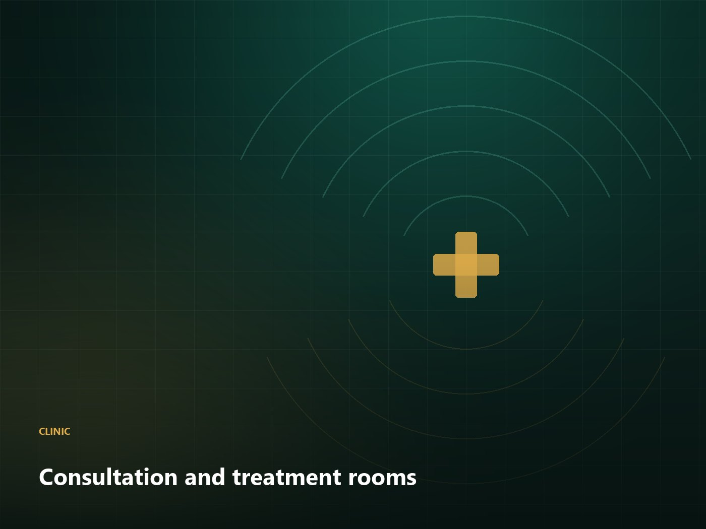
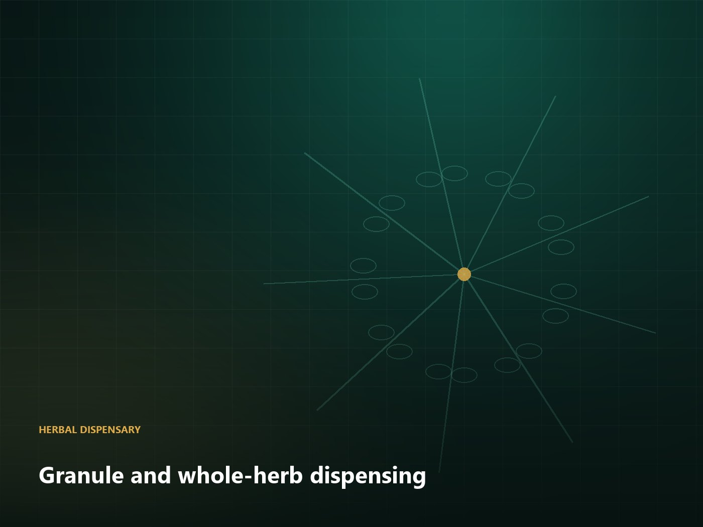
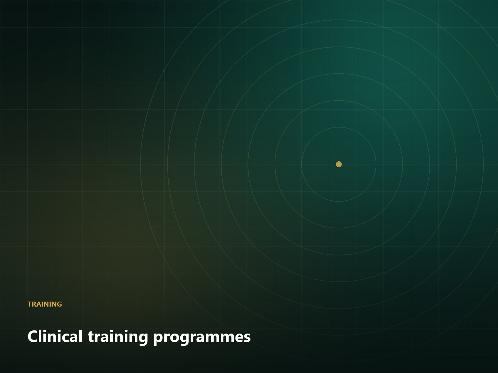

AWA-CLN-START
TCM Clinic Start-up Package
Everything a new overseas TCM clinic needs: equipment, dispensary setup, SOPs and training.
US$28,600MOQ: 1 package
Clinic programmes
For clinics in North America and Europe: the equipment, the documentation, the herb supply and the training — set up so that your local regulator, your insurers and your patients can all see how you work.

Services
Room-by-room equipment supply, dispensary fit-out and branding support for a new practice or a new service line.
120+ herbs under GACP-aligned sourcing, with batch-level test documentation and planned replenishment.
Tongue and pulse acquisition with structured intake software, built for remote second opinions.
Tiered curriculum with supervised hours, case portfolios and documented certification.
In detail

Dispensary
Granule cabinets, calibrated scales, mixers and labelling stations are supplied as a set, along with the receiving inspection SOPs and the documentation templates your inspector will ask to see.

Training
Foundations, supervised practice and advanced case management are delivered as separate tiers with separate assessments. Participants advance on demonstrated competence, not attendance.
Compliance
Consent forms, privacy notices, hygiene protocols and scope-of-practice statements are drafted to the expectations of your market and reviewed by a native-speaking regulatory reviewer.
Clinic supply
AWA-CLN-START
Everything a new overseas TCM clinic needs: equipment, dispensary setup, SOPs and training.
US$28,600MOQ: 1 package
AWA-CLN-TRAIN
Structured 3-tier training programme with assessment, supervision and certification records.
US$9,800MOQ: 1 cohort
Tell us your location, the rooms you have and your patient flow. We will send a written setup outline with indicative costs — and be honest about what your jurisdiction will require.